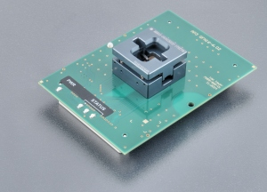
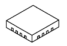

AP3 QFN16-6.02
(Ord. no. 73-7059)
Preis: Preis nachfragen
- Universelles Programmiermodul für Geräte im QFN16-Gehäuse (z.B. EFM8BB50x)
- Mechanische Garantie des ZIF-Sockels - 10.000 Betätigungen
- Unterstützt ab PG4UW-Softwareversion 3.98m
- Hergestellt in der Slowakei
| Ord. no. | 73-7059 |
| Socket | ZIF QFN16, OpenTop type |
| Bottom | 2 connectors by 68 pins, receptacle type |
| Class | Universal |
| Subclass | QFN (MLF) |

Adapter manual
- Der Programmer muss nicht ausgeschaltet werden und die Software kann während des Einsetzens/Entfernens des Programmiermoduls laufen
- Schützen Sie die Kontakte der Modulstecker und des ZIF-Sockels vor Verunreinigungen. Jeglicher Schmutz und/oder Fett auf den Kontakten kann zu Fehlern während der Programmierung führen.
- Gehen Sie vorsichtig vor! Falsches Einsetzen des Geräts in den ZIF-Sockel des Moduls kann zu Schäden am programmierten Gerät führen.
- Lösen Sie die gerändelte Rändelschraube. Setzen Sie das Programmiermodul in die Anschlüsse der Programmiermodul-Schnittstelle ein, bis es einrastet. Aufgrund der Form der Anschlüsse ist nur eine Ausrichtung und Position des Programmiermoduls in den Anschlüssen der Programmiermodul-Schnittstelle möglich. Ziehen Sie die gerändelte Rändelschraube fest, um das Programmiermodul am Programmer zu fixieren.
- Drücken Sie die Abdeckung des ZIF-Sockels des Moduls (der oberste bewegliche Teil) nach oben, um den Sockel zu öffnen. Setzen Sie das Gerät in den ZIF-Sockel des Moduls ein. Die korrekte Position des zu programmierenden Geräts im ZIF-Sockel des Moduls wird durch ein Bild neben (normalerweise links) dem ZIF-Sockel des Moduls angezeigt. Auf diesem Bild wird die Referenzecke des Geräts (z.B. die Position von Pin 1) durch einen Punkt, die Nummer 1, eine abgeschrägte Ecke oder eine Kombination davon gekennzeichnet. Lassen Sie dann den ZIF-Sockel des Moduls los.
- Die Abdeckung muss vollständig betätigt (heruntergedrückt) sein, bevor ein Gerät in den Sockel eingesetzt wird. Wenn das Gerät in einen nur teilweise geöffneten ZIF-Sockel eingesetzt wird, können nach dem Loslassen der Abdeckung die Pins des Geräts beschädigt werden.
- Üben Sie beim Einsetzen des Geräts und/oder beim Loslassen der Abdeckung keinen Druck auf das Gerät aus.
- Überprüfen Sie visuell die Platzierung des programmierten Geräts im ZIF-Sockel des Moduls. Wenn alles in Ordnung aussieht, ist das Gerät bereit für die Programmierung.
- Um das Gerät aus dem Modul zu entnehmen, drücken Sie die Abdeckung des ZIF-Sockels des Moduls nach oben und entfernen Sie das Gerät.
- Wenn Sie die Arbeit mit dem Modul beendet haben, lösen Sie die gerändelte Rändelschraube und entfernen Sie das Modul aus den Anschlüssen der Programmiermodul-Schnittstelle.
- Betriebsbedingungen: Temperatur 5°C ÷ 40°C (41°F ÷ 104°F), Luftfeuchtigkeit 20% ÷ 80% nicht kondensierend
Accepted package(s)
QFN16

Useable for programmers
Dieser Programmieradapter / dieses Modul unterstützt möglicherweise nicht alle Geräte in den oben genannten Gehäusen auf Ihrem Programmer. Bitte überprüfen Sie die Situation für die speziellen Geräte, mit denen Sie arbeiten möchten, anhand der aktuellen Geräteliste Ihres Programmers.